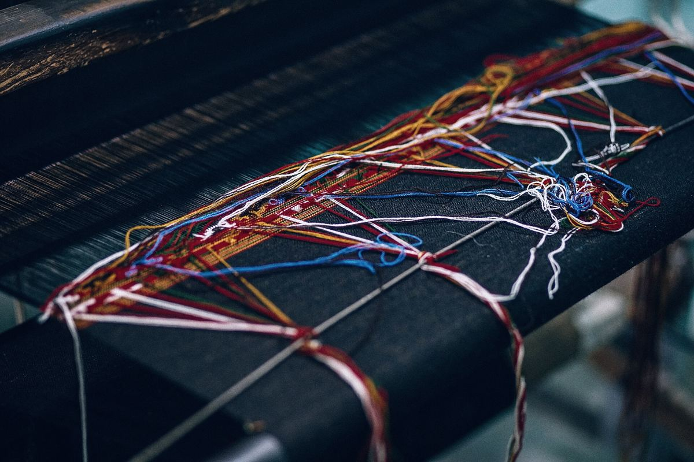
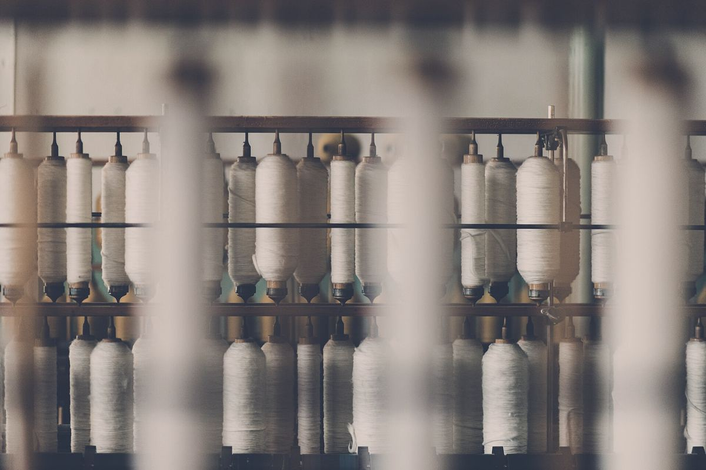
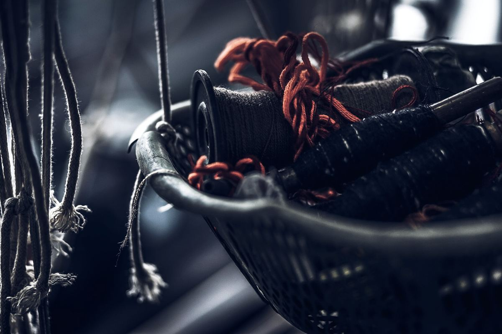
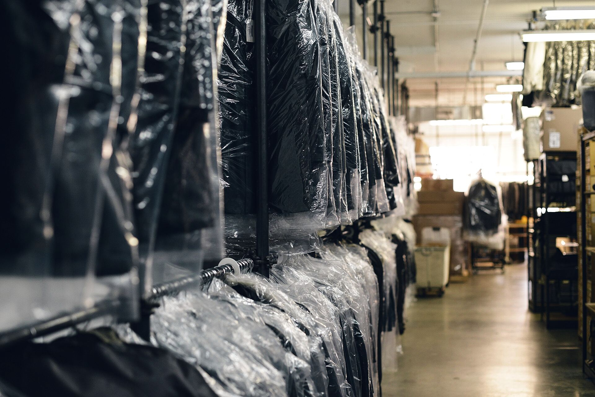
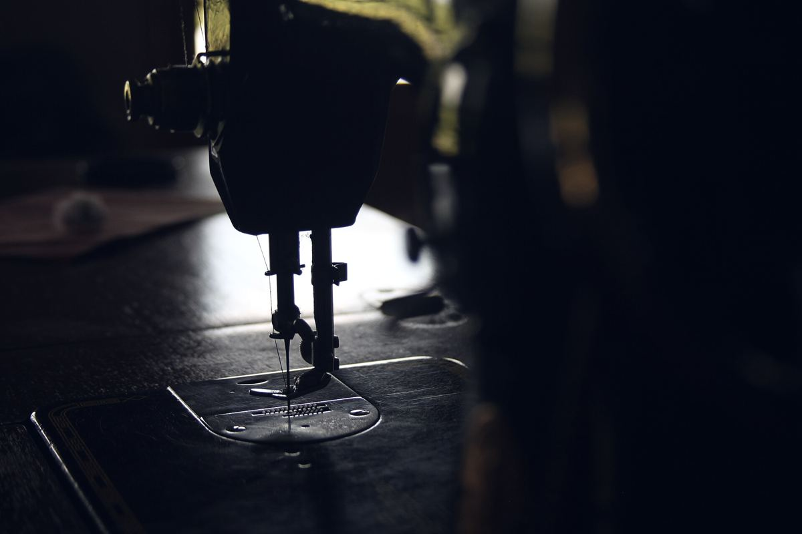

Stiro e finissaggio
Stiro a vapore, tiratura e messa in forma: il capo esce pronto da appendere in negozio.
Stiro, tintura, taglio e riparazione di capi e tessuti. Dal 2004 nell'Area Artigianale di Vedelago, tra Castelfranco e Montebelluna.
Lavoriamo capi e tessuti per conto di chi produce moda, dal capo campione al lotto di produzione.
Stiro a vapore, tiratura e messa in forma: il capo esce pronto da appendere in negozio.
Tintura di capi e tessuti, sui lotti di produzione e sui campionari.
Taglio di tessuti per confezionisti e laboratori, pronto per la cucitura.
Riparazione e ripristino dei capi con difetti, prima che il lotto riparta.
Capi campione e prototipi rifiniti per uffici stile e marchi, prima della collezione.
Vendita, assistenza e noleggio di macchine per confezione, stiro e taglio.
Scopri i macchinari
Prototipi e capi campione da rifinire, tingere o sistemare prima che la collezione vada in produzione.

Lotti di produzione da stirare e rifinire, con la stessa resa dal primo all'ultimo capo.

Tessuti da tagliare o tingere, capi da riparare e macchine da noleggiare quando il lavoro cresce.

Il lavoro finisce qui: capi stirati, appesi, pronti per la consegna.
Ci portate o spedite un capo campione, con le indicazioni di lavorazione.
Lavoriamo il campione, lo vedete e lo approvate: da lì si fissano i parametri.
Tutto il lotto passa in reparto con gli stessi parametri del campione approvato.
I capi tornano pronti per la consegna, nei tempi concordati al telefono.

Oltre alle lavorazioni, NILUC vende, assiste e noleggia macchinari per laboratori e aziende di confezione.
Per andare veloci, tenete a portata di mano: